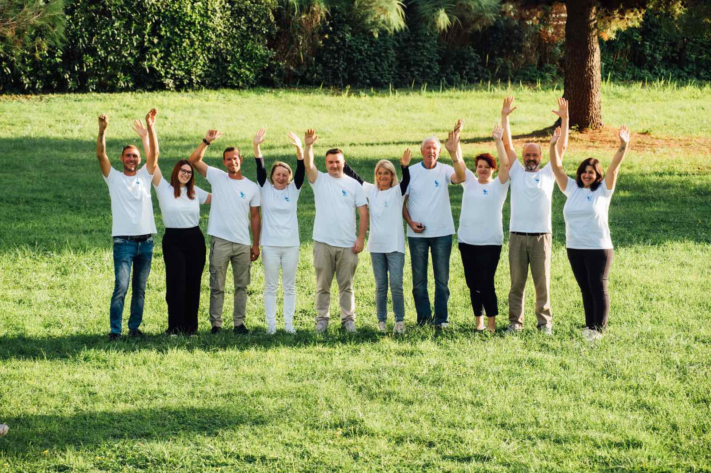

Štiri možnosti uporabe fotografije ekipa_2.jpg kot velikega zaglavja. Izberi številko.
Fotografija je podlaga, čez njo levi preliv v temno modro — naslov, podnaslov in »Srečna 13« so levo spodaj. Klasično in zelo berljivo.

Lokalne volitve 2026 · Izola
Deset Izolanov in Izolank, ki stojijo za listo 13 — Skupaj za Izolo (SZI).
Naša številka: Srečna 13!Leva polovica je v blagovni znamki modra s tekstom, desna polovica je fotografija. Urejeno, brez preliva čez obraze.
Lokalne volitve 2026
Deset Izolanov in Izolank, ki stojijo za listo 13 — Skupaj za Izolo (SZI).
Naša številka: Srečna 13!
Fotografija je pod modrim prelivom (duotone občutek), naslov je na sredini. Najbolj »plakatno«, ekipa se še vedno vidi.
Lokalne volitve 2026 · Izola
Deset Izolanov in Izolank, ki stojijo za listo 13 — Skupaj za Izolo (SZI).
Naša številka: Srečna 13!
Fotografija je širok trak, naslov pa v beli kartici, ki se prekriva s spodnjim delom fotografije. Mehkejše, uredniško.
Lokalne volitve 2026
Deset Izolanov in Izolank, ki stojijo za listo 13 — Skupaj za Izolo (SZI).
Naša številka: Srečna 13!